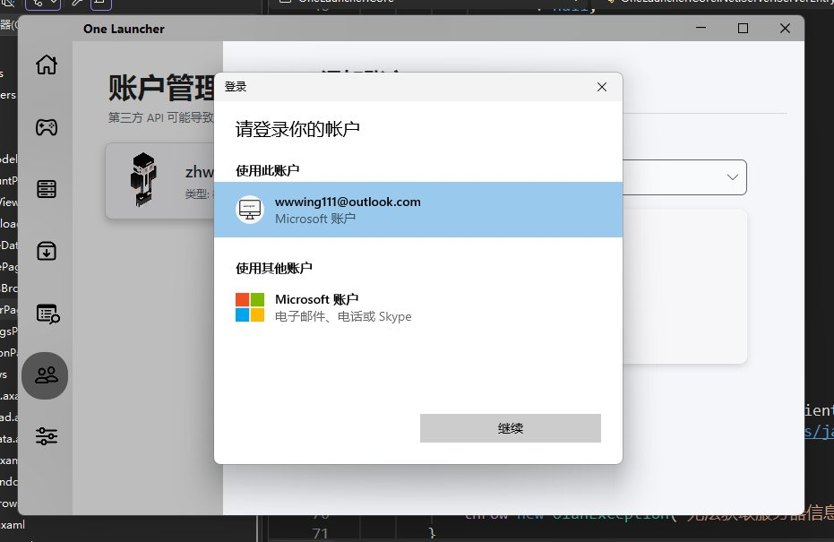

洛铃🦊Magic Caster
@LolingVerse
@zhwevea 要有心去注意到有这样的api可以用吧，包括甚至微软自己的有些也是跳浏览器

Zhi Wei 🥥🧊
@zhwevea
感觉好像用了这么多MC启动器
除了我还没真见过调用系统API进行微软正版登入验证的（
感觉别的都要繁琐的打开浏览器输入验证码登入 https://t.co/WpJLf0sSXq https://t.co/bj9BXem8DV